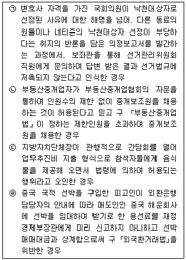
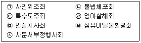
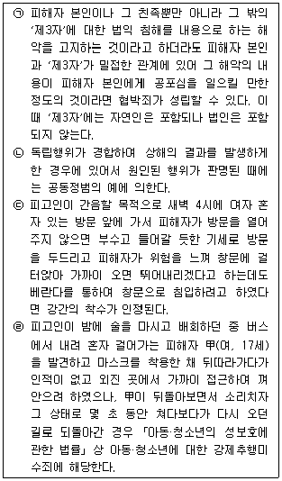
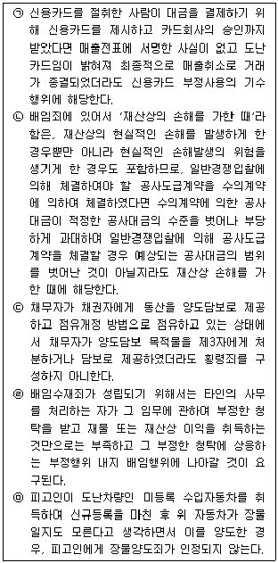
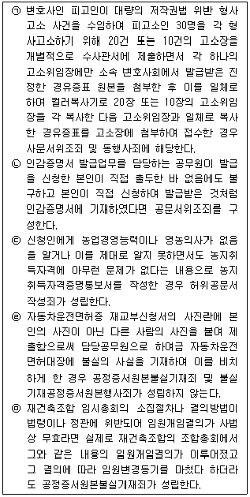

경찰공무원(순경)-형법 (2017-03-18 기출문제)
1. 죄형법정주의에 대한 설명으로 가장 적절한 것은?(다툼이 있는 경우 판례에 의함)
- 공개명령 제도가 시행되기 전에 범한 범죄에도 공개명령 제도를 적용하도록 「아동·청소년의 성보호에 관한 법률」이 개정되었다면, 이는 소급입법금지의 원칙에 반한다.
- 위법성 및 책임의 조각사유나 소추조건, 또는 처벌조각사유인 형면제 사유에 관하여 그 범위를 제한적으로 유추적용하는 것은 유추해석금지의 원칙에 반하지 않는다.
- '약국 개설자가 아니면 의약품을 판매하거나 판매 목적으로 취득할 수 없다'고 규정한 구 「약사법」 제44조 제1항의 '판매'에 무상으로 의약품을 양도하는 '수여'를 포함시키는 해석은 죄형법정주의에 위배된다고 볼 수 없다.
- 「폭력행위 등 처벌에 관한 법률」 제4조 제1항에서 규정하고 있는 범죄단체 구성원으로서의 '활동'의 개념은 추상적이고 포괄적이므로 명확성의 원칙에 위배된다.
(정답률: 74%)

2. 다음 중 「형법」 제1조 제2항에 의하여 신법이 적용되는 경우가 아닌 것은?(다툼이 있는 경우 판례에 의함)
- 구 「정보통신망 이용촉진 및 정보보호 등에 관한 법률」 제66조의 양벌규정은 법인에 대한 면책규정을 두지 아니하였는데, 같은 법률이 개정되면서 면책규정이 추가된 경우
- 후원회의 연간 모금한도액에 전년도 이월금을 포함시키지 않는 것으로 정치자금법 규정을 개정한 경우
- '납세의무자가 정당한 사유 없이 1회계연도에 3회 이상 체납하는 경우'를 처벌하는 구 「조세범 처벌법」 제10조가 삭제된 경우
- 「형법」 제257조 제1항(상해)의 가중적 구성요건을 규정하고 있던 구 「폭력행위 등 처벌에 관한 법률」 제3조 제1항을 삭제하는 대신 같은 구성요건을 「형법」 제258조의2 제1항(특수상해)에 신설하면서 법정형을 구 「폭력행위 등 처벌에 관한 법률｣ 제3조 제1항보다 낮게 규정한 경우
(정답률: 80%)
3. 과실범에 대한 설명으로 가장 적절하지 않은 것은?(다툼이 있는 경우 판례에 의함)
- 고속국도를 주행하는 차량의 운전자는 도로양측에 휴게소가 있는 경우에도 동 도로상에 보행자가 있음을 예상하여 감속 등 조치를 할 주의의무가 있다 할 수 없다.
- 과실일수죄는 형법상 처벌규정이 있으나 과실교통방해죄는 형법상 처벌규정이 없다.
- 의사가 설명의무를 위반한 채 의료행위를 하여 피해자에게 상해가 발생하였다고 하더라도, 업무상 과실로 인한 형사책임을 지기 위해서는 피해자의 상해와 의사의 설명의무 위반 내지 승낙취득 과정의 잘못 사이에 상당인과관계가 존재하여야 한다.
- 의료과오사건에 있어서 의사의 과실 유무를 판단함에는 같은 업무와 직무에 종사하는 일반적 보통인의 주의 정도를 표준으로 하여야 하며, 이때 사고 당시의 일반적인 의학의 수준과 의료환경 및 조건, 의료행위의 특수성 등을 고려하여야 한다.
(정답률: 75%)
4. 실행의 착수에 대한 설명으로 가장 적절하지 않은 것은?(다툼이 있는 경우 판례에 의함)
- 가압류는 강제집행의 보전방법에 불과하고 그 기초가 되는 허위의 채권에 의하여 실제로 청구의 의사표시를 한 것이라고 할 수 없으므로 소의 제기 없이 가압류신청을 한 것만으로는 사기죄의 실행에 착수한 것이라고 할 수 없다.
- 부동산 경매절차에서 피고인들이 허위의 공사대금채권을 근거로 유치권 신고를 한 경우, 소송사기의 실행의 착수가 인정된다.
- 피고인이 히로뽕 제조원료 구입비로 금 3,000,000원을 제1심 공동피고인에게 제공하였는데 공동피고인이 그로써 구입할 원료를 물색 중 적발되었다면 피고인의 행위는 히로뽕 제조에 착수하였다고 볼 수 없다.
- 「부정경쟁방지 및 영업비밀보호에 관한 법률」 제18조 제2항에서 정하고 있는 영업비밀부정사용죄에 있어서는, 행위자가 당해 영업비밀과 관계된 영업활동에 이용 혹은 활용할 의사 아래 그 영업활동에 근접한 시기에 영업비밀을 열람하는 행위를 하였다면 그 실행의 착수가 있다.
(정답률: 64%)
5. 다음 중 법률의 착오에 정당한 이유가 있는 것을 모두 고른 것은?(다툼이 있는 경우 판례에 의함)

- ㉠㉡
- ㉢
- ㉢㉣
- 없음
(정답률: 86%)
6. 다음 중 「형법」 상 미수범 처벌규정이 없는 범죄는 모두 몇 개인가?

- 1개
- 2개
- 3개
- 4개
(정답률: 62%)
7. 공동정범에 대한 설명으로 가장 적절한 것은?(다툼이 있는 경우 판례에 의함)
- 우연히 만난 자리에서 서로 협력하여 공동의 범의를 실현하려는 의사가 암묵적으로 상통하여 범행에 공동가공한 것이라면 공동정범은 성립하지 않는다.
- 타인의 범행을 인식하면서도 이를 제지하지 아니하고 용인하는 심리상태만으로 공동정범의 공동가공의 의사가 인정될 수 있다.
- 딱지어음을 발행하여 매매하였더라도, 딱지어음의 전전유통경로나 중간 소지인들 및 그 기망방법을 구체적으로 몰랐던 경우라면 사기죄의 공모관계를 인정할 수 없다.
- 업무상배임죄로 이익을 얻는 수익자 또는 그와 밀접한 관련이 있는 제3자를 배임의 실행행위자와 공동정범으로 인정하기 위해서는 실행행위자의 행위가 피해자 본인에 대한 배임행위에 해당한다는 것을 알면서도 소극적으로 배임행위에 편승하여 이익을 취득한 것만으로는 부족하고, 실행행위자의 배임행위를 교사하거나 또는 배임행위의 전 과정에 관여하는 등으로 배임행위에 적극 가담할 것이 필요하다.
(정답률: 57%)
8. 교사범에 대한 설명으로 가장 적절하지 않은 것은?(다툼이 있는 경우 판례에 의함)
- 교사자가 피교사자에게 피해자를 “정신차릴 정도로 때려주라”고 교사하였다면 이는 상해에 대한 교사로 봄이 상당하다.
- 교사범이 성립하기 위해서는 교사자가 피교사자에게 범행의 일시, 장소, 방법 등의 세부적인 사항까지를 특정하여 교사하여야 한다.
- 피무고자의 교사·방조 하에 제3자가 피무고자에 대한 허위의 사실을 신고한 경우에는 제3자의 행위는 무고죄의 구성요건에 해당하여 무고죄를 구성하므로, 제3자를 교사·방조한 피무고자도 교사·방조범으로서의 죄책을 부담한다.
- 「형법」 제127조는 공무원 또는 공무원이었던 자가 법령에 의한 직무상 비밀을 누설하는 행위만을 처벌하고 있을뿐, 직무상 비밀을 누설받은 상대방을 처벌하는 규정이 없는 점에 비추어 볼 때, 직무상 비밀을 누설받은 자에 대하여는 공범에 관한 형법총칙 규정이 적용될 수 없다.
(정답률: 87%)
9. 불가벌적 사후행위에 해당하는 것으로 가장 적절한 것은?(다툼이 있는 경우 판례에 의함)
- 흡연할 목적으로 대마를 매입한 후 흡연할 기회를 포착하기 위하여 2일 이상 하의주머니에 넣고 다님으로써 매입한 대마를 소지한 행위
- 부정한 이익을 얻을 목적으로 타인의 영업비밀이 담긴 CD를 절취하여 그 영업비밀을 부정 사용한 행위
- 절도범인으로부터 장물보관의뢰를 받은 자가 그 정을 알면서 이를 인도받아 보관하고 있다가 임의처분한 행위
- 자동차를 절취한 후 절취한 자동차에서 자동차등록번호판을 떼어내는 행위
(정답률: 72%)
10. 죄수에 대한 설명으로 가장 적절한 것은?(다툼이 있는 경우 판례에 의함)
- 경찰관이 검사로부터 범인을 검거하라는 지시를 받고서도 그 직무상의 의무에 따른 적절한 조치를 취하지 아니하고 오히려 범인에게 전화로 도피하라고 권유하여 그를 도피케 한 경우, 범인도피죄와 직무유기죄의 상상적 경합이다.
- 상습성이 있는 자가 같은 종류의 죄를 반복하여 저질렀다 하더라도 상습범을 별도의 범죄유형으로 처벌하는 규정이 없는 한, 각 죄는 원칙적으로 별개의 범죄로서 경합범으로 처단하여야 한다.
- 사기의 수단으로 발행한 수표가 지급거절된 경우, 부정수표단속법위반죄와 사기죄는 그 행위의 태양과 보호법익을 달리하므로 상상적 경합범의 관계에 있다.
- 편취한 약속어음을 그와 같은 사실을 모르는 제3자에게 편취사실을 숨기고 할인 받은 경우, 그 약속어음을 취득한 제3자가 선의이고 약속어음의 발행인이나 배서인이 어음금을 지급할 의사와 능력이 있었다면 제3자에 대한 별도의 사기죄는 성립하지 않는다.
(정답률: 62%)
11. 다음 설명 중 가장 적절한 것은?(다툼이 있는 경우 판례에 의함)
- 甲이 乙을 살해하기 위하여 丙, 丁 등을 고용하면서 그들에게 대가의 지급을 약속한 경우, 甲에게 살인예비죄가 성립하지 않는다.
- 상해를 입힌 행위가 동일한 일시, 장소에서 동일한 목적으로 저질러진 것이라면 피해자를 달리하고 있더라도 포괄하여 일죄를 구성한다.
- 피해자(여)가 버려진 영아인 피고인을 주어다 기르고 그 부와의 친생자인 것처럼 출생신고를 하였으나 입양요건을 갖추지 아니하였다면 피고인이 동녀를 살해하였더라도 존속살인죄로 처벌할 수 없다.
- 상해죄와 폭행죄는 피해자의 명시한 의사에 반하여 공소를 제기할 수 없다.
(정답률: 73%)
12. 「형법」 상 친족상도례에 대한 설명 중 가장 적절하지 않은 것은?(다툼이 있는 경우 판례에 의함)
- 친족상도례 규정은 강도죄, 경계침범죄, 강제집행면탈죄에는 적용되지 않으나 특수절도죄 및 상습절도죄에는 적용된다.
- 법원을 기망하여 제3자로부터 재물을 편취한 경우 피해자인 제3자와 사기죄를 범한 자가 직계혈족 관계에 있을 때에는 그 범인에 대하여 형을 면제하여야 한다.
- 「형법」 제354조에 의하여 준용되는 제328조 제1항에서 “직계혈족, 배우자, 동거친족, 동거가족 또는 그 배우자 간의 제323조의 죄는 그 형을 면제한다.”고 규정하고 있는바, 여기서 '그 배우자'는 동거가족의 배우자만을 의미하는 것이 아니라, 직계혈족, 동거친족, 동거가족 모두의 배우자를 의미하는 것으로 볼 것이다.
- 장물죄를 범한 자와 본범 간에 「형법」 제328조 제2항의 신분관계가 있는 때에는 형을 감경 또는 면제한다. 단, 신분관계가 없는 공범에 대하여는 예외로 한다.
(정답률: 55%)
13. 사기의 죄에 대한 설명 중 가장 적절하지 않은 것은?(다툼이 있는 경우 판례에 의함)
- 사기죄에서 처분행위자와 피기망자는 동일인이어야 하나, 피기망자와 재산상 피해자는 동일인이 아니어도 무방하다.
- 컴퓨터 등 사용사기죄에서의 '정보처리'는 입력된 허위의 정보 등에 의하여 계산이나 데이터의 처리가 이루어짐으로써 직접적으로 재산처분의 결과를 초래하여야 하고, 행위자나 제3자의 '재산상 이익 취득'은 사람의 처분행위가 개재됨이 없이 컴퓨터 등에 의한 정보처리 과정에서 이루어져야 한다.
- 재물을 편취한 후 현실적인 자금의 수수 없이 형식적으로 기왕에 편취한 금원을 새로이 장부상으로만 재투자하는 것으로 처리한 경우 그 재투자금액은 편취액의 합산에서 제외하여야 한다.
- 상습사기 미수범을 처벌하는 규정은 없다.
(정답률: 61%)
14. 다음 설명 중 옳지 않은 것을 모두 고른 것은?(다툼이 있는 경우 판례에 의함)

- ㉠
- ㉠㉡㉣
- ㉠㉡
- ㉢㉣
(정답률: 60%)
15. 다음 설명 중 옳은 것을 모두 고른 것은?(다툼이 있는 경우 판례에 의함)

- ㉠㉣㉤
- ㉡㉢
- ㉢㉤
- ㉢
(정답률: 60%)
16. 강제집행면탈죄에 대한 설명 중 가장 적절한 것은?(다툼이 있는 경우 판례에 의함)
- 이혼을 요구하는 처로부터 재산분할청구권에 근거한 가압류 등 강제집행을 받을 우려가 있는 상태에서 남편이 이를 면탈할 목적으로 허위의 채무를 부담하고 소유권이전청구권보전가등기를 경료한 경우 강제집행면탈죄가 성립하지 않는다.
- 피고인이 자신의 채권담보의 목적으로 채무자 소유의 선박들에 관하여 가등기를 경료하여 두었다가 채무자와 공모하여 위 선박들을 가압류한 다른 채권자들의 강제집행을 불가능하게 할 목적으로 정확한 청산절차도 거치지 않은 채 의제자백판결을 통하여 선순위 가등기권자인 피고인 앞으로 본등기를 경료함과 동시에 가등기 이후에 경료된 가압류등기 등을 모두 직권말소하게 한 경우 '재산상 은닉'에 해당한다.
- '보전처분 단계에서의 가압류채권자의 지위' 자체는 원칙적으로 민사집행법상 강제집행 또는 보전처분의 대상이 될 수 없어 강제집행면탈죄의 객체에 해당한다고 볼 수 없으나 가압류채무자가 가압류해방금을 공탁한 경우에는 그렇지 아니하다.
- 강제집행면탈죄는 반드시 채권자를 해하는 결과가 야기되거나 이로 인하여 행위자가 어떤 이득을 취하여야 성립하므로 허위양도한 부동산의 시가액보다 그 부동산에 의하여 담보된 채무액이 더 많다면 그 허위양도로 인하여 채권자를 해할 위험이 없다.
(정답률: 50%)
17. 유가증권에 관한 죄에 대한 설명 중 가장 적절하지 않은 것은?(다툼이 있는 경우 판례에 의함)
- 자기앞수표의 발행인이 수표의뢰인으로부터 수표자금을 입금받지 아니한 채 자기앞수표를 발행하더라도 허위유가증권작성죄가 성립하지 아니한다.
- 위조유가증권행사죄에 있어서의 유가증권이라 함은 위조된 유가증권의 원본을 말하는 것이지 전자복사기 등을 사용하여 기계적으로 복사한 사본은 이에 해당하지 않는다.
- 유가증권의 내용 중 권한 없는 자에 의하여 이미 변조된 부분을 다시 권한 없이 변경한 경우 유가증권변조죄는 성립하지 않는다.
- 타인이 위조한 액면과 지급기일이 백지로 된 약속어음을 구입하여 행사의 목적으로 백지인 액면란에 금액을 기입하여 그 위조어음을 완성하는 행위는 백지어음 형태의 위조행위와 별개의 유가증권위조죄를 구성하지 않는다.
(정답률: 70%)
18. 다음 설명 중 옳은 것을 모두 고른 것은?(다툼이 있는 경우 판례에 의함)

- ㉠㉢㉣
- ㉢㉣
- ㉡㉤
- ㉠㉣㉤
(정답률: 70%)
19. 위계에 의한 공무집행방해죄에 대한 설명 중 가장 적절한 것은?(다툼이 있는 경우 판례에 의함)
- 상대방에게 오인, 착각, 부지를 일으키게 하는 행위가 구체적인 직무집행을 저지하거나 현실적으로 곤란하게 하는 데까지 이르지 않은 경우에도 위계에 의한 공무집행방해죄로 처벌할 수 있다.
- 법원에 가처분 신청 시 당사자가 허위의 주장을 하거나 허위의 증거를 제출하였다면 그 즉시 위계에 의한 공무집행방해죄가 성립한다.
- 화물자동차 운송주선사업자인 피고인이 관할 행정청에 주기적으로 허가기준에 관한 사항을 신고하는 과정에서 가장납입에 의해 발급받은 허위의 예금잔액증명서를 제출하는 부정한 방법으로 허가를 받은 경우 위계에 의한 공무집행방해죄가 성립하지 않는다.
- 위계에 의한 공무집행방해죄에서 공무원의 직무집행이란 법령의 위임에 따른 공무원의 적법한 공무집행인 이상 공권력의 행사를 내용으로 하는 권력적 작용뿐만 아니라 사경제주체로서의 활동을 제외한 비권력적 작용도 포함된다.
(정답률: 40%)
20. 위증과 증거인멸의 죄에 대한 설명 중 가장 적절하지 않은 것은?(다툼이 있는 경우 판례에 의함)
- 제3자가 심문절차로 진행되는 가처분 신청사건에서 증인으로 출석하여 선서를 하고 허위 공술을 한 경우 위증죄가 성립하지 않는다.
- 모해위증죄에서 모해의 목적은 허위의 진술을 함으로써 피고인에게 불리하게 될 것이라는 인식이 있으면 충분하고 그 결과의 발생까지 희망할 필요는 없다.
- 증거위조죄에서 '타인의 형사사건'이란 증거위조 행위 시에 아직 수사절차가 개시되기 전이라도 장차 형사사건이 될 수 있는 것까지 포함하나 그 형사사건이 기소되지 아니하거나 무죄가 선고될 경우 증거위조죄가 성립하지 않는다.
- 타인의 형사사건과 관련하여 수사기관이나 법원에 제출하거나 현출되게 할 의도로 법률행위 당시에는 존재하지 아니하였던 처분문서를 사후에 그 작성일을 소급하여 작성하는 것은 증거위조죄의 구성요건을 충족시키는 것이라고 보아야 하고, 비록 그 내용이 진실하다 하여도 국가의 형사사법기능에 대한 위험이 있다는 점은 부인할 수 없다.
(정답률: 63%)
따라서, "'약국 개설자가 아니면 의약품을 판매하거나 판매 목적으로 취득할 수 없다'고 규정한 구 「약사법」 제44조 제1항의 '판매'에 무상으로 의약품을 양도하는 '수여'를 포함시키는 해석은 죄형법정주의에 위배된다고 볼 수 없다"는 것은, 약사법에서 '판매'라는 용어가 명확하게 정의되어 있으며, 이에 따라 판매와 수여가 구분되어야 한다는 판례가 이미 존재하기 때문입니다. 따라서, 이를 포함시키는 해석은 죄형법정주의에 위배되지 않습니다.